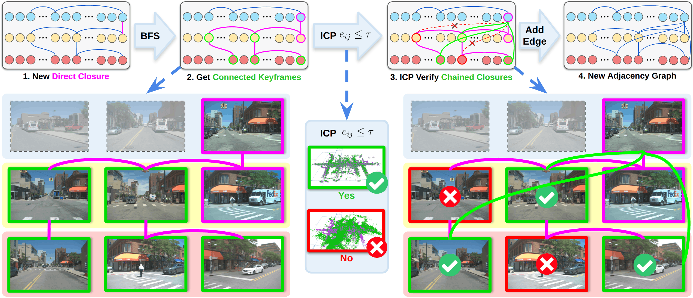
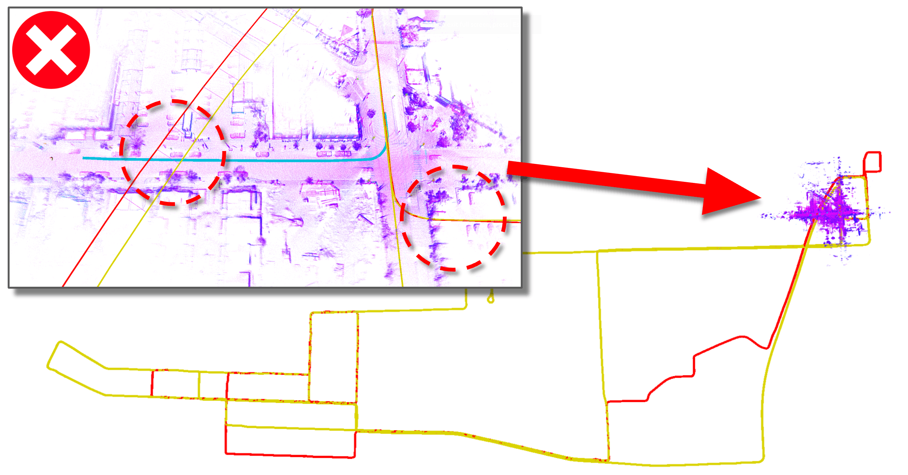
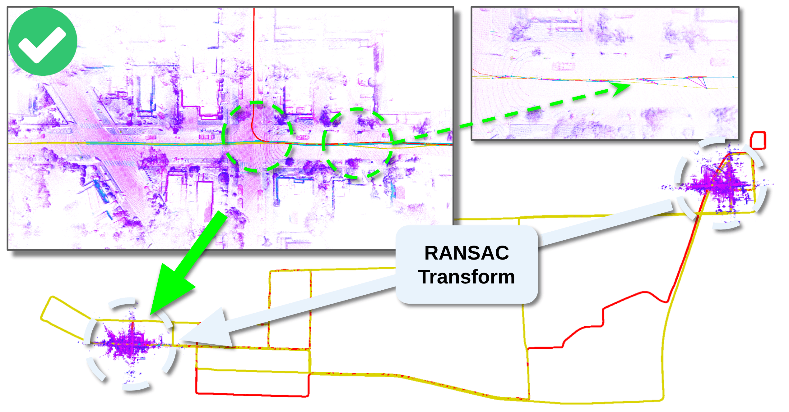
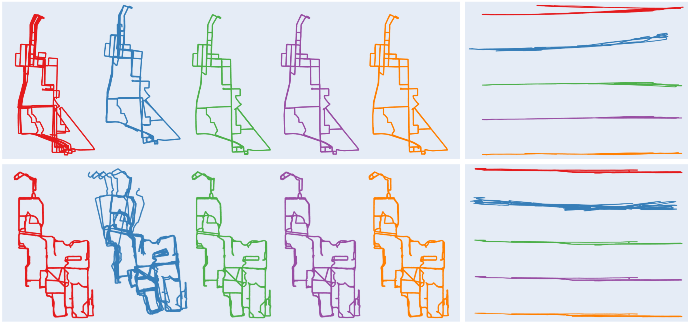

Staying geometrically consistent over long spatial and temporal horizons is a fundamental challenge in large-scale LiDAR SLAM, especially when maps from many separate sessions must be merged. Chain-SLAM is a LiDAR SLAM backend for online multi-session map alignment and reuse at scale. A chained loop closure mechanism propagates each reliable short-horizon closure across inter-session keyframes through an adjacency graph, yielding long-horizon consistency; sessions are brought into a common frame by GNSS-proximity place recognition and then jointly optimized in a unified factor graph. The result is inter- and intra-session consistency without dynamic object removal, and cross-platform robustness with minimal tuning.

Five sessions accumulating over an intersection that each of them revisits from a different direction, with loop closure constraints drawn in magenta. With direct closures alone the session trajectories stay fanned apart through the turn; chaining adds the constraints that pull them onto the same geometry.
w/o chained closure
w/ chained closure
The current session starts at the origin of its own frame, inconsistent with the map frame of the loaded sessions. A RANSAC-estimated transform aligns it to the loaded map, which re-enables loop closure detection against the earlier sessions along the transformed trajectory.
Before merging

After merging


Absolute pose error over full 6-DoF trajectories, with first and second places highlighted; lower is better. Chained loop closure gives the lowest translation error on both datasets.
| Dataset | Method | T RMSE (m) | R RMSE (deg) |
|---|---|---|---|
| MARS | Fast-LIO2 | 52.616 | 4.708 |
| LAMM | 43.688 | 10.285 | |
| Ours unchained | 13.511 | 3.729 | |
| Ours chained | 9.640 | 3.448 | |
| NCLT | Fast-LIO2 | 2.279 | 2.618 |
| LAMM | 33.547 | 11.549 | |
| Ours unchained | 1.473 | 4.876 | |
| Ours chained | 1.197 | 4.647 |
Measured on the final session, with all four previous maps loaded and jointly optimized. Frontend cost stays at the Fast-LIO2 level because optimization runs asynchronously in the backend: roughly 2 Hz on the 12-hour, 128-channel MARS dataset and 13 Hz on the 8-hour, 32-channel NCLT dataset.
| Dataset | Method | Frontend (ms) | Backend (ms) | FPS (Hz) | RAM (MB) |
|---|---|---|---|---|---|
| MARS | Fast-LIO2 | 22.28 | – | 44.88 | 1065.56 |
| LAMM | 22.28 | 21.25 | 22.97 | 16821.90 | |
| Ours unchained | 29.88 | 402.33 | 2.31 | 12571.12 | |
| Ours chained | 29.39 | 447.02 | 2.10 | 13668.46 | |
| NCLT | Fast-LIO2 | 7.34 | – | 136.17 | 928.77 |
| LAMM | 7.34 | 11.31 | 53.61 | 5917.86 | |
| Ours unchained | 7.79 | 67.50 | 13.28 | 5682.82 | |
| Ours chained | 7.82 | 70.13 | 12.83 | 5816.96 |
Full tables and ablations are in the paper.
@inproceedings{li2026chainslam,
title = {Chain-SLAM: Globally Consistent Backend for Multi-Session LiDAR SLAM via Chained Loop Closure},
author = {Li, Zhiheng and Liu, Xinhao and Zhang, Juexiao and Liang, Yongqing and Feng, Chen},
booktitle = {IEEE/RSJ International Conference on Intelligent Robots and Systems (IROS)},
year = {2026}
}